Epinoia is a competition platform for basketball. A statistician’s app writes an append-only log of what happened, and everything else is derived from it — the box score, the table, the play-by-play, the lineups, the advanced numbers, the club and player pages, the widgets on somebody else’s website, the API, the phone app and the alert that arrives at half-time. Nothing on any page is a figure somebody typed twice.
Every figure Epinoia publishes — on a competition site, inside a widget on a club’s own pages, in a phone alert, or through the API — is derived from the same append-only event log by the same engine. The two models differ in one respect only: how much of the public surface we host. The capture, the derivation and the distribution are identical.
Captures of the running site. Everything below is reachable from the public navigation without an account, and every number in them was derived from an event log rather than entered.
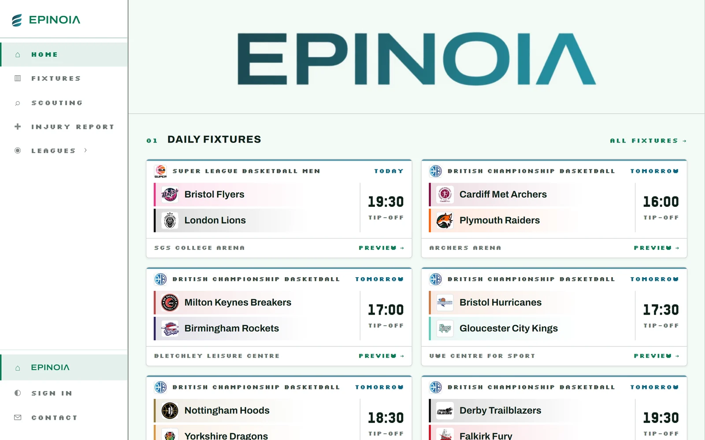
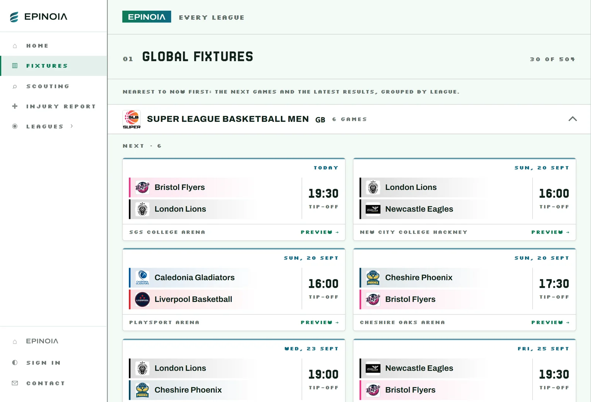
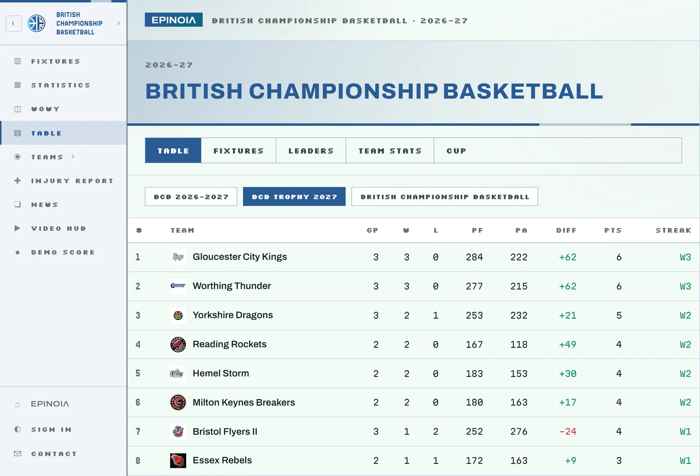
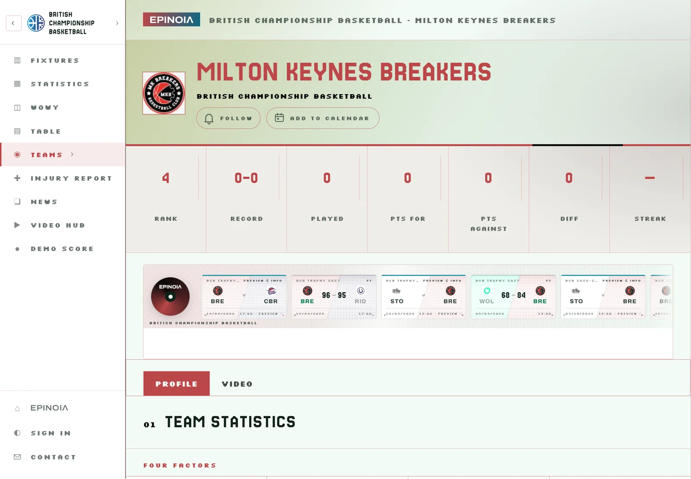
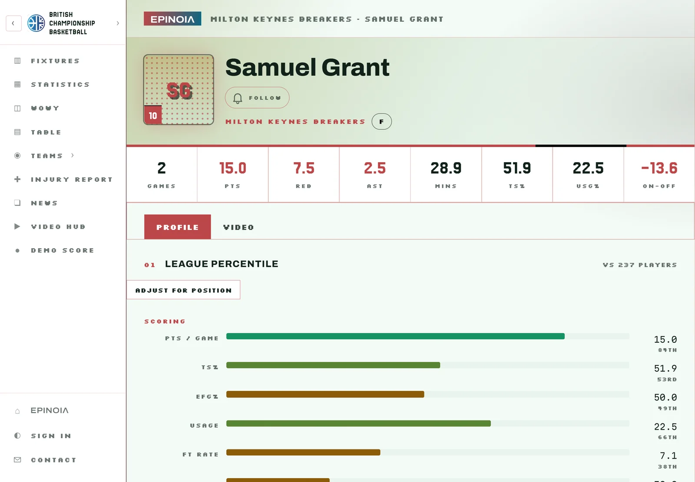
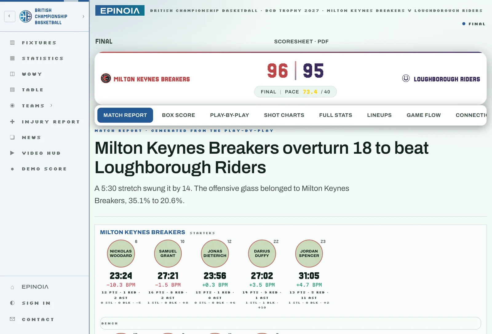
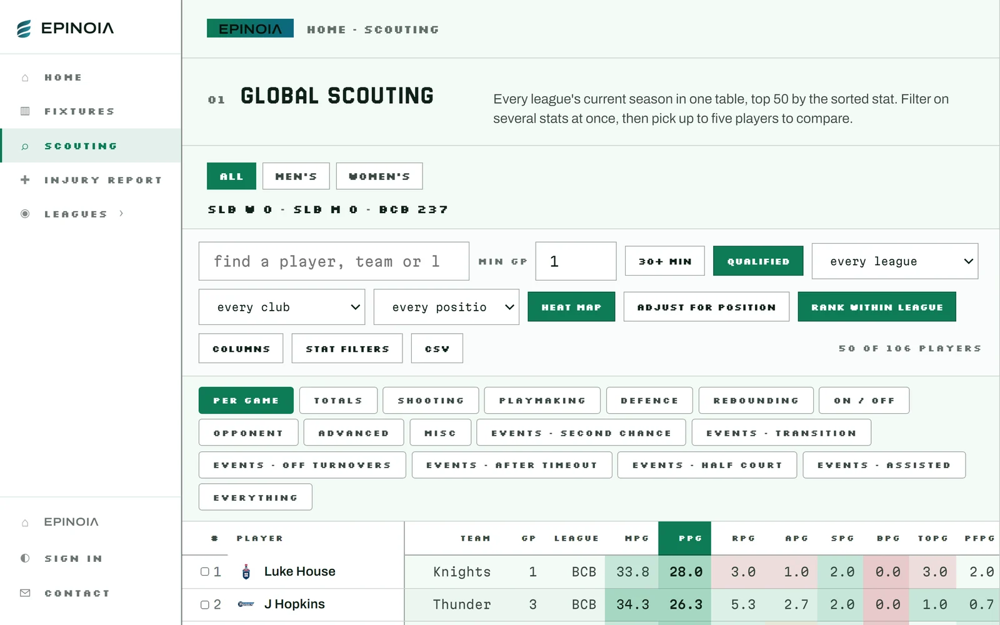
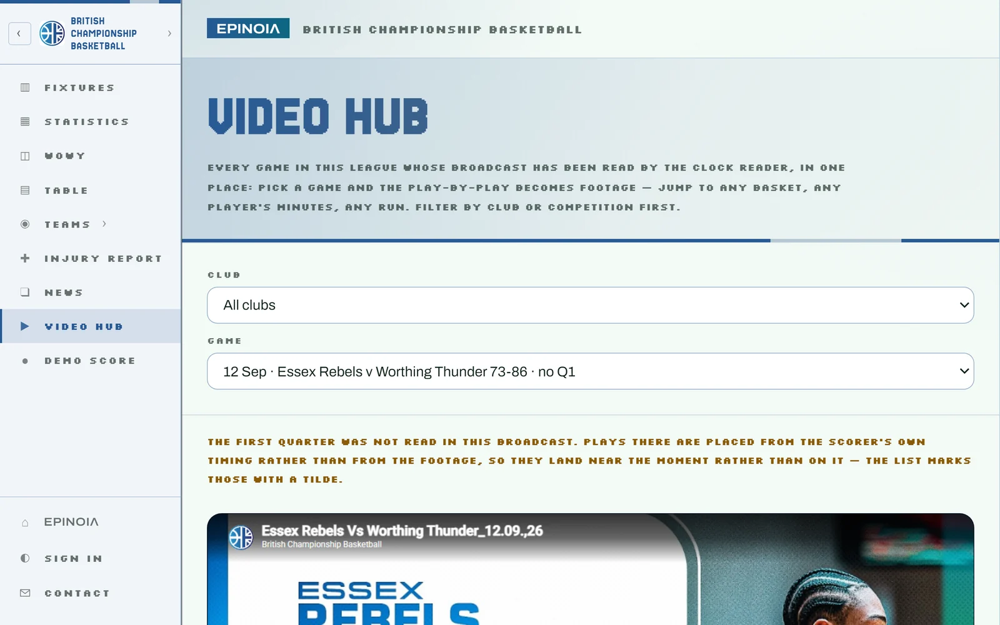
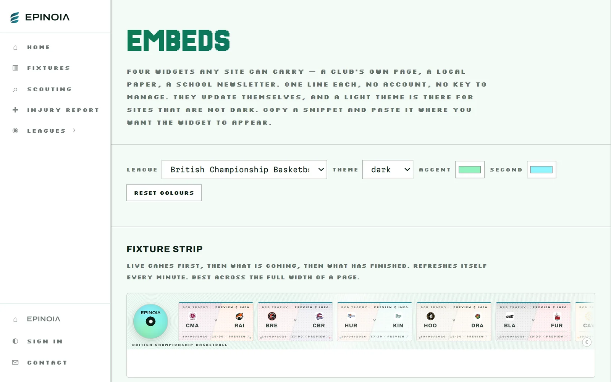
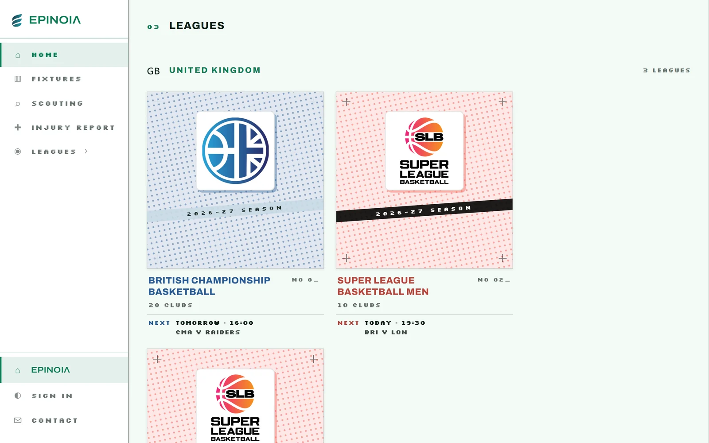
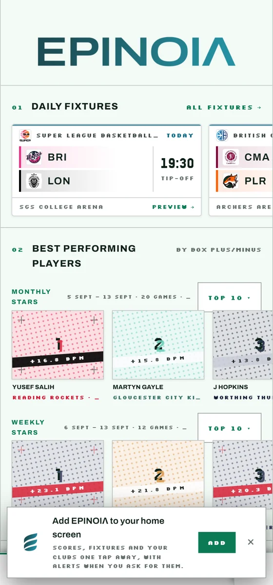
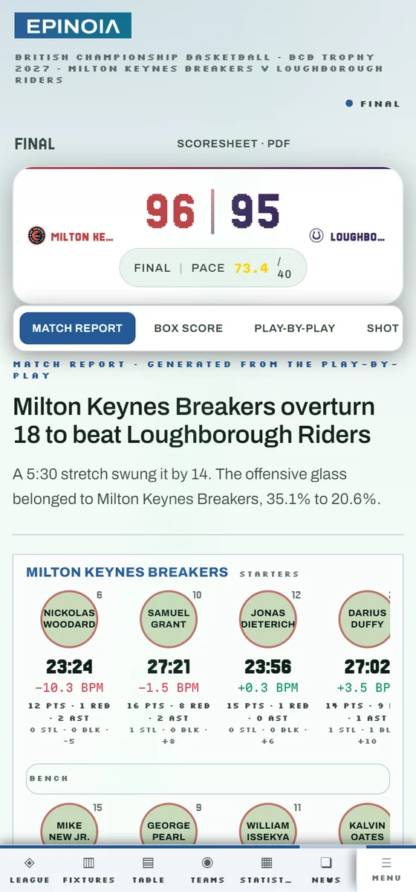
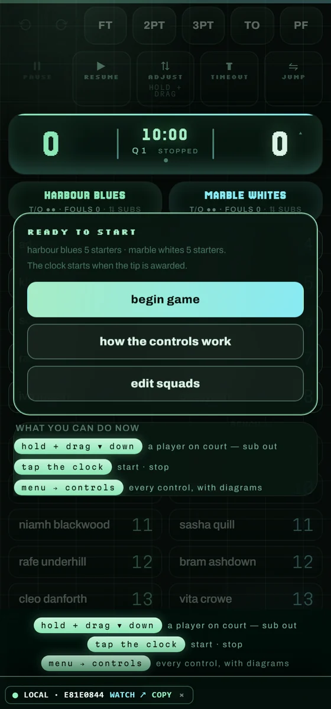
The difference between the two is the public surface. Nothing below changes between them, because there is only one pipeline underneath.
Nothing, and no account. The training game below is this same application with saving switched off — score a few possessions on the device you would actually use on a Saturday.
A federation wants to stop administering a spreadsheet. A club wants a page that is not embarrassing. A broadcaster wants the clock. An analyst wants the log. Find yours.
Nothing. Open the training game and score a few possessions: no account, no setup, nothing saved. If it suits the way your competition works, get in touch and we will set your league up properly.
The contact form reaches the person who builds this. Say roughly how many clubs and how many games a week, and whether you already record stats.
Everything below is running now. Work in progress is not on this list — a roadmap printed as a feature list is how software gets bought twice.
Everything is an event. A made two, a defensive rebound, a substitution — each is a row appended to a log that is never edited in place. The box score, the play-by-play, the lineup stints and every advanced figure are computed from that log by one shared engine, which is the same file the scorer, the public page and the server all run.
That is why a correction works: an undo appends a retraction, the log is replayed, and every derived number changes together. It is also why two pages cannot disagree — there is only one place a number is worked out.
Not every competition needs a statistician in every hall. A game can reach the log four ways, and downstream they are indistinguishable: